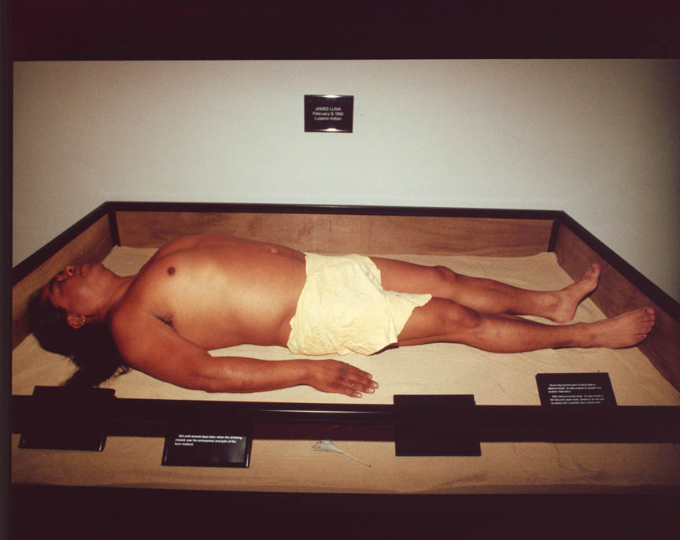
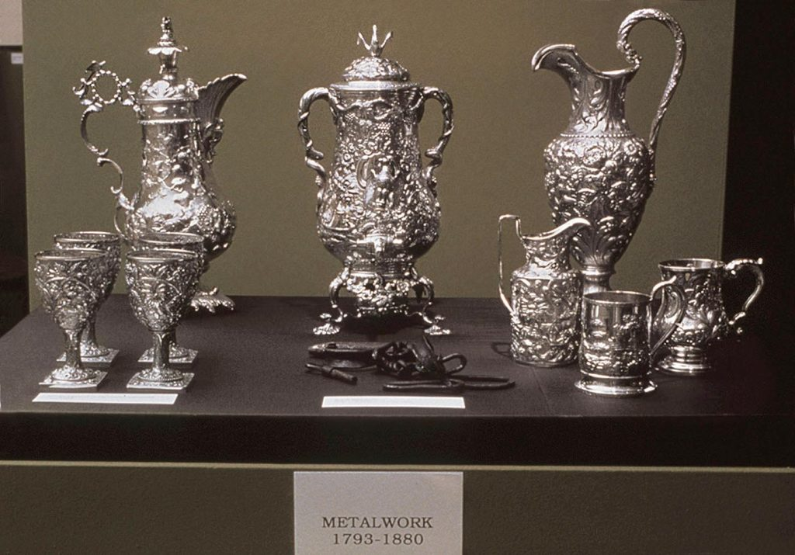

The Google definition for ‘museum’ is ‘a building in which objects of historical, scientific, artistic, or cultural interest are stored and exhibited.’ This is an apt definition for most people, a museum is a house of muse, of ‘interests’. Generally, the museum is seen as an agent for cultural preservation and education. However, much like Illich’s 1 Deschooling Society, Ivan Illich, 1971 view of how schooling instills capitalist ideologies in students, the museum plays a integral role in shaping the social and cultural future, not just remembering its past.
The museum represents a temple of knowledge for a particular community. Carol Duncan 2 The Art Museum as Ritual, Carol Duncan, 1995 examines how the rise of secularism co-aligns with the increasing importance of museums as a place for intellectual and cultural insight. She likens it to a religious experience, except in the place of God, there is the ‘truth’ or ‘knowledge’.
Similar to how Foucault 3 Birth of the Clinic, Michel Foucault, 1963 argues the new language of science and medicine allows for subjects/individuals to be suppressed through new definitions and labels, museums now hold power in defining what is beautiful art, what is important knowledge and what requires our attention at the given moment. This becomes problematic as when a few number of curators dictate what the public sees, access to knowledge and what is deemed as knowledge (as well as culture) becomes authoritarian. As museums are concerned with public education, there is a responsibility in creating a democratic and representative exhibit.
This is imperative in our technological age where the internet has allowed for the proliferation of information but also facilitated the spread of misinformation and propaganda. The public’s trust in museums as a bastion of truth should not be betrayed with biases, under-representation and indoctrination.
Still, its easy to see how museums are designed to be exclusive and ritualistic. Objects that are placed in museums or galleries have an elevated sense of importance, not only because the curator decided it so but because the audience believes it as well. The architecture of a museum signals an air of untouchability. The walls are pristine white, the objects are lock safely within a glass case, and they are often raised on a plinth. The museum is often not a comfortable place, and it has been built intentionally so.
A person not versed in the etiquette or rituals of museums feel out of place. Its been shown in many studies 4 Museum Visiting as a Cultural Phenomenon, Nick Merriman, 1989that museums goers have generally completed a high level of education. This kind of elitism is perpetuated by creating a separate building that houses ‘objects of knowledge’. It can be argued that the museum becomes a designated space for the ‘cultured’ and promotes class divisions.
Yet, even those who frequent museums are subject to its intentions and rituals. The signs and layout of a exhibit will have been carefully constructed so that the viewer experiences what the curator wants them to. This is compounded with the social expectation that one will gain something from the experience. So that one feels an overwhelming obligation to find the displays fascinating and insightful.
Bazin5 The Museum Age, Germain Bazin, 1967 describes the typical experience eloquently. "Statues must be isolated in space, paintings hung far apart, a glittering jewel placed against a field of black velvet and spot-lighted; in principle, only one object at a time should appear in the field of vision. Iconographic meaning, overall harmony, aspects that attracted the nineteenth-century amateur, no longer interest the contemporary museum goer, who is obsessed with form and workmanship; the eye must be able to scan slowly the entire surface of a painting. The act of looking becomes a sort of trance uniting spectator and masterpiece."
It could be argued that this environment is beneficial in learning about a certain cultural object, or observing a work of art. However, I would argue that this experience has become so expected - through all the signs, architecture and pressure - that it becomes inevitable. And in that way it is fabricated and meaningless.
Even after an insightful experience, after an exhibition there are now gift shops that sell a miniature version of recognisable displays. The experience is then reduced to a decoration through the commodification of culture. The commercialisation of museums is another way in which the guise of culture and education has been use for ulterior motives.
These motives often time are to perpetuate the social hierarchy and the status quo. In ‘Curatorial Activism’6Curatorial Activism: Towards an Ethics of Curating, Maura Reilly, 2018 , Dr Maura Reilly argues that modern art museums are an agent of cultural hegemony. She shares the statistic that only 4% of artists in the MoMA’s 2004 permanent exhibit were women and even fewer were artists of colour 6Curatorial Activism: Towards an Ethics of Curating, Maura Reilly, 2018 . If museums play a crucial role in educating the public, the curatorial biases will pass on to the future generation’s understanding of history, art, culture, etc.
The question then is how can the museum be improved under this scrutiny? Is it possible to have a centralised collection of cultural objects and knowledge that is not autocratic? Can the public organise a shared exhibition that is fully democratic and representative?
Reilly celebrates the curatorial practices that try to go against the Western, male and homophobic perspectives that dominate this sphere. Shows like: Documenta 11, The Decade Show, Century City, Sexual Politics and more. She calls these ‘curatorial correctives’, reshaping art history by inserting themselves back into the historical canon and taking back control of their own narrative.
These counter hegemonic practices aren’t limited to curators. Artists such as James Luna, criticised how Native Americans were portrayed in national museums. He physically and literally inserted himself into the exhibition space, commenting on how his culture is very much alive, contrary to the narrative told by curators that suggest its going extinct. Luna’s act of taking back control of his own narrative is only necessary as non-white, non-western culture has been mystified, fetishised, appropriated and severely misrepresented by curators who are cultural outsiders.
In testament to the power of the museum in forming the historical canon, Fred Wilson’s radical act of ‘mining the museum’ only required him to rearrange items already within the Maryland Historical Society. Objects and artworks themselves can only tell a limited story, through curation they develop a narrative, a narrative that lend themselves easily to bias.
Perhaps it is the intrinsic nature of museums to be biased, and under representative. After all, a museum with no intention, no curation is impossible. However, Reilly’s celebration of curatorial activists shows there is progress being made. With a lot of fight, knowledge can be democratised through the function of the museum. In order to ensure a fair and just representation of all cultures within museums, its curators need to be representative of the multi-cultural, sexually diverse and feminist times we live in today.
Sun Min Kim | CSM | BAGCD | 2020
References
1. Illich, I. (1971). Deschooling society. New York: Harper and Row.
2. Duncan, C. (1995). Art Museum as Ritual.
3. Foucault, M. (1963). The Birth of the Clinic. Presses Universitaires de France.
4. Merriman, N. (1989). museum visiting as a cultural phenomenon. In: P. Virgo, ed., The New Museology. Reaktion Books.
5. Bazin, G. (1968). The museum age. Desoer.
6. Reilly, M. (2018). Curatorial Activism. W W Norton & Co Inc.